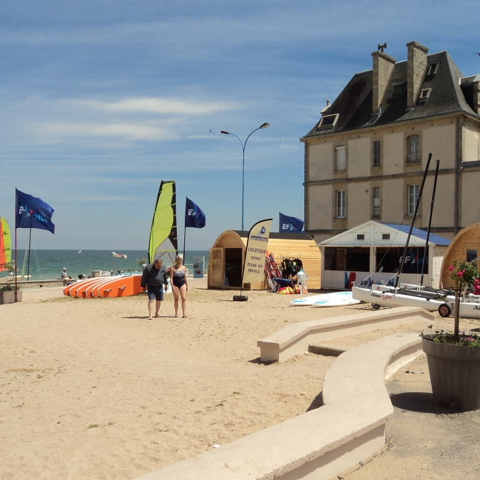
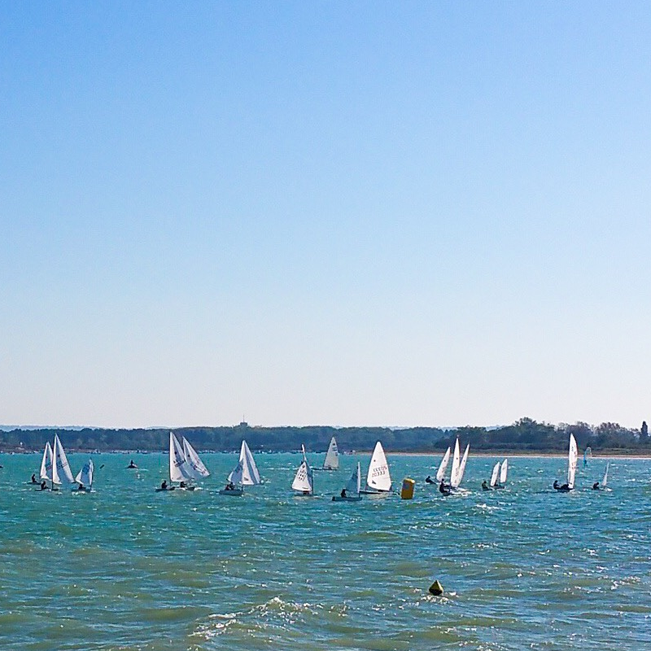
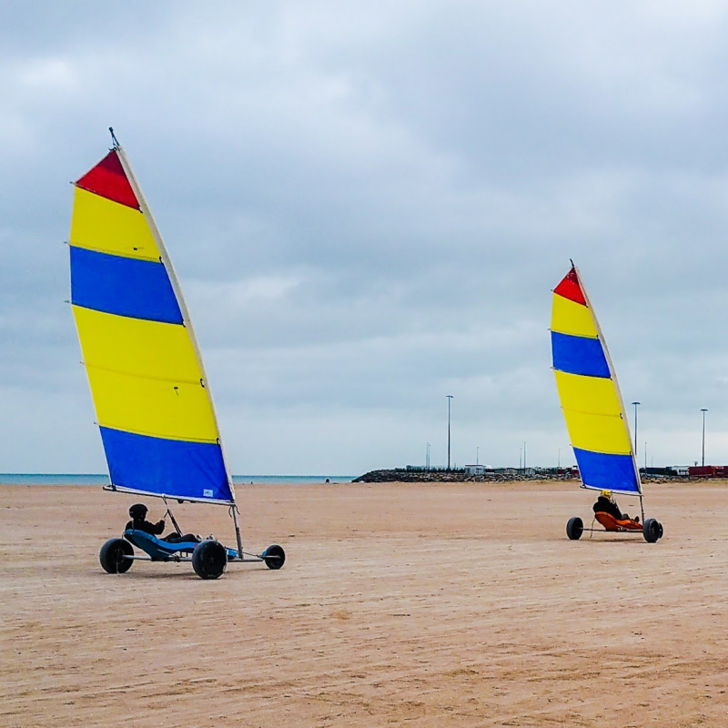

A quelques kilomètres de Caen, la capitale de la Région Normandie, OCEAN est le lieu de rendez-vous des pratiquants des sports nature de bord de mer. Implantée sur 4 sites de la Côte de Nacre (Ouistreham-Riva Bella, Colleville-Montgomery et Lion sur Mer) , l’association propose de février à décembre ses activités nautiques aux particuliers, aux groupes ou aux entreprises.
Le char à voile, le Stand Up Paddle, la planche à voile, le cataraman, le dériveurs, le kayak n’ont plus de secrets pour vous, débutants, confirmés ou compétiteurs. Nos permanents diplômés vous encadrent pour progresser en toute sécurité à la découverte des sensations de glisse.
Affiliée aux trois fédérations françaises de voile (FFV), de char à voile (FFCV) et de surf (FFS) pour l’enseignement et l’organisation de régates, OCEAN est aussi partenaire de l’AFF (Association Française de Funboard) pour accueillir chaque année une étape du championnat de France de Funboard (Bret’s AFF Funboard Tour).
